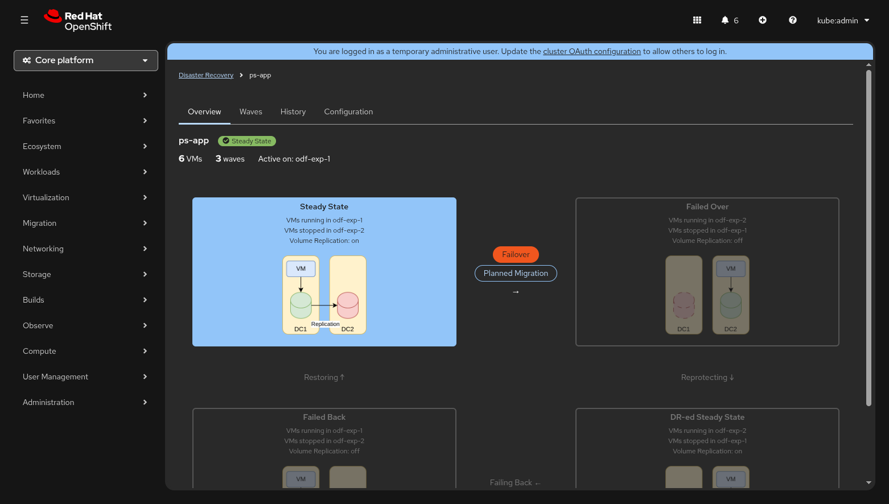
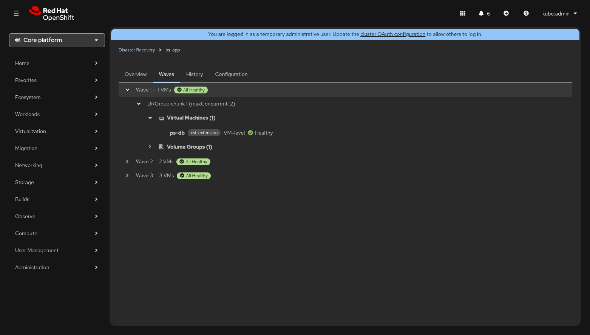
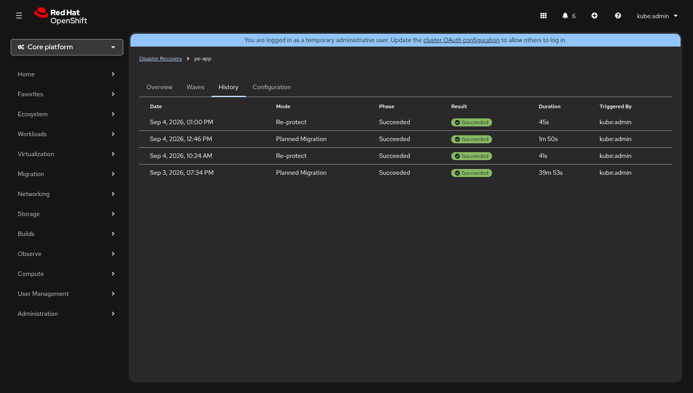
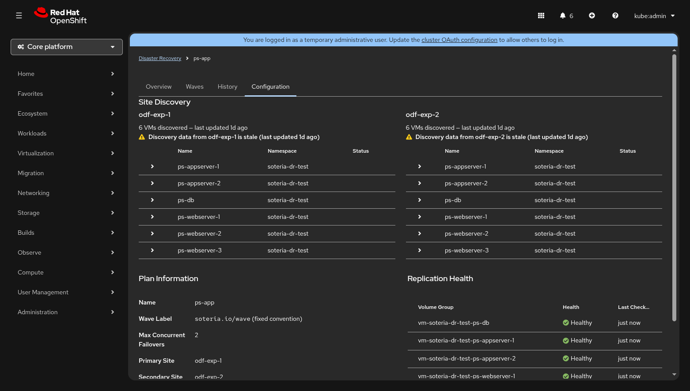

Plan Detail¶
The Plan Detail view is the operational cockpit for a single DRPlan. From this page you can inspect every aspect of the plan — its lifecycle state, wave composition, execution history, and full configuration — and trigger DR actions when the plan is in a rest phase.
Navigate here by clicking any plan row on the Dashboard, or by using the breadcrumb link Disaster Recovery → Plans → plan-name.

Page Layout¶
The top of the page displays a breadcrumb trail and the plan header:
| Element | Description |
|---|---|
| Plan name | Bold title — the metadata.name of the DRPlan resource. |
| Phase badge | Colour-coded label showing the current effective phase (e.g. Steady State, Failing Over). |
| VM count | Total number of VMs discovered for the plan. |
| Wave count | Number of waves the plan is divided into. |
| Active site | The cluster currently running the VMs (e.g. odf-exp-1). |
Below the header, four tabs organise the remaining content:
Overview Tab¶
The Overview tab is the default landing view. It contains up to three sections stacked vertically.
Alert Banners¶
If sites disagree on VM inventory or disk topology, an inline danger alert appears at the top of the tab:
| Alert | Meaning |
|---|---|
| Sites do not agree on VM inventory | The primary and secondary sites report different VM lists. A "View site differences" link jumps to the Configuration tab's Site Discovery section. |
| Disk topology inconsistent across sites | Disk names or storage classes don't match between sites. DR operations are blocked until the mismatch is resolved. |
While either alert is active, the action buttons on the lifecycle diagram are disabled with a tooltip explaining the block reason.
Transition Progress Banner¶
When a DR action is in flight, a progress banner replaces the quiet lifecycle diagram area. The banner shows:
- A progress bar with the percentage of waves completed.
- The current wave number (e.g. "Wave 2 of 3").
- Elapsed time since the execution started (updates every second).
- Estimated time remaining (calculated from average wave duration).
- A View execution details link that navigates to the Execution Monitor for the running execution.
DR Lifecycle Diagram¶
The lifecycle diagram is a 2 × 2 grid of phase nodes connected by transition edges. It represents the four rest phases and the four transitions of the DR state machine:
Steady State ───Failover / Planned Migration──▸ Failed Over
▴ │
│ Reprotect
Restore │
│ ▾
Failed Back ◂──Failback / Planned Migration── DR-ed Steady State
Each phase node displays:
- The phase label (e.g. "Steady State").
- Which site is running VMs and which is standby.
- Whether volume replication is on or off.
- A small topology illustration showing the two sites.
The current rest phase is highlighted with a filled background; all other phases are dimmed. During a transition, the destination node's border becomes dashed.
Phase Details¶
| Phase | Active Site | Standby Site | Vol. Replication |
|---|---|---|---|
| Steady State | Primary | Secondary | On |
| Failed Over | Secondary | Primary | Off |
| DR-ed Steady State | Secondary | Primary | On |
| Failed Back | Primary | Secondary | Off |
Context-Aware Action Buttons¶
Only the transitions that are valid from the current rest phase show action buttons. This is a core UX design principle — the UI never presents an action the operator cannot take.
| Current Phase | Available Actions |
|---|---|
| Steady State | Failover (danger) · Planned Migration |
| Failed Over | Reprotect |
| DR-ed Steady State | Failback (danger) · Planned Migration |
| Failed Back | Restore |
Clicking any action button opens the Pre-flight Confirmation Modal. During a transition, no buttons appear — the in-progress edge shows a pulsing "In progress..." label instead.
Tip
Actions marked (danger) use a red button variant to signal that they involve unplanned or forced VM movement. Planned Migration and Reprotect/Restore use the standard secondary button style.
Waves Tab¶
The Waves tab renders a hierarchical tree view of the plan's wave composition using the PatternFly TreeView component.

Tree Structure¶
Wave 1 — 1 VM ✅ Healthy
├── DRGroup chunk 1 (maxConcurrent: 6)
│ ├── Virtual Machines (1)
│ │ └── ps-db [csi-extension] VM-level ● Healthy
│ └── Volume Groups (1)
│ └── vg-ps-db 2 disks
Wave 2 — 2 VMs ✅ Healthy
├── ...
Wave 3 — 3 VMs ✅ Healthy
└── ...
Each wave node shows:
- The wave ordinal and total VM count.
- An aggregate health badge that summarises the replication status of
all volume groups in the wave (
All Healthy, or a breakdown such as1 Degraded, 1 Syncing).
Expanding a wave reveals its DRGroup chunks (controlled by
maxConcurrentFailovers). Each chunk contains two sub-groups:
- Virtual Machines — one leaf per VM, showing:
- VM name (bold).
- Storage backend label (e.g.
csi-extension). - Consistency level: either a
NS: <namespace>label for namespace-level consistency, or plain text "VM-level". - A replication health indicator (green check, yellow warning, blue sync, red error, or grey unknown).
- Volume Groups — one node per volume group, expandable to show individual disks and their PVC mappings across sites.
Note
If no waves have been configured for the plan, the tab displays the message "No waves configured for this plan".
History Tab¶
The History tab shows a sortable table of all past and in-progress executions for this plan.

| Column | Description |
|---|---|
| Date | Start time formatted as locale-aware date + time (e.g. "Sep 3, 2026, 02:15 PM"). |
| Mode | The execution mode: Planned Migration, Disaster, or Re-protect. |
| Phase | Current phase of the execution (e.g. Completed, Running). |
| Result | A colour-coded badge — Succeeded (green ✓), Partial (yellow ⚠), Failed (red ✕), or In Progress (plain text). |
| Duration | Elapsed wall-clock time (e.g. "1m 50s", "39m 53s"). |
| Triggered By | The user or system component that initiated the execution (read from the soteria.io/triggered-by annotation). |
Rows are sorted newest first. Clicking any row navigates to the execution's detail page in the Execution Monitor.
When no executions exist, an empty state is displayed with the message "Trigger a planned migration to validate your DR plan".
Configuration Tab¶
The Configuration tab is divided into three sections.

Site Discovery¶
The top area displays a side-by-side comparison of the VMs discovered on the primary and secondary sites. Each site column includes:
- The site name and total VM count.
- A "last updated" relative timestamp (e.g. "2 minutes ago").
- A table of discovered VMs with columns: Name, Namespace, and Status.
VMs that exist on one site but not the other are highlighted with a warning background and a ⚠ icon. Clicking the expand arrow on a VM row reveals its disk detail table comparing disk names, PVC names, and storage classes across sites. Mismatched storage classes are highlighted in red; disks missing from one site are highlighted in yellow.
Warning
If the discovery data from a site is more than five minutes old, a stale data warning appears below the site header.
Plan Information¶
A horizontal description list showing the plan's core settings:
| Field | Example |
|---|---|
| Name | ps-app |
| Wave Label | soteria.io/wave (fixed convention) |
| Max Concurrent Failovers | 6 |
| Primary Site | odf-exp-1 |
| Secondary Site | odf-exp-2 |
| Volume Replication Driver | csi-extension |
| Created | Sep 1, 2026, 10:30 AM |
If the DRPlan resource has labels or annotations (excluding internal Kubernetes annotations), they are displayed below the field list.
Replication Health¶
A per-volume-group health table listing each volume group's name, replication health indicator, and last-checked timestamp. If per-VG data is not available, the section falls back to the plan-level overall health indicator.
Pre-flight Confirmation Modal¶
Clicking an action button on the lifecycle diagram opens a modal dialog that serves as the final gate before creating a DRExecution.
The modal displays:
| Item | Description |
|---|---|
| Title | "Confirm Action: plan-name" |
| VM / wave summary | Total VM count and wave count from pre-flight data. |
| Estimated duration | Predicted RTO based on historical execution times. |
| DR site capacity | Assessment of the target site's resource headroom. |
| Action summary | Prose description of what the execution will do. |
| Confirmation keyword | A text input that must match a specific keyword before the confirm button enables (e.g. type FAILOVER to confirm a failover). |
| Action | Confirmation Keyword | Button Style |
|---|---|---|
| Failover | FAILOVER |
Danger (red) |
| Planned Migration | MIGRATE |
Primary (blue) |
| Reprotect | REPROTECT |
Primary (blue) |
| Failback | FAILBACK |
Danger (red) |
| Restore | RESTORE |
Primary (blue) |
If creation fails, an inline danger alert appears inside the modal with the error message.
Related Pages¶
- Dashboard — overview of all DRPlans
- Execution Monitor — live execution tracking
- Creating a DRPlan — how to define a plan
- Waves & Throttling — wave composition and
maxConcurrentFailovers - DR Lifecycle — architecture of the state machine